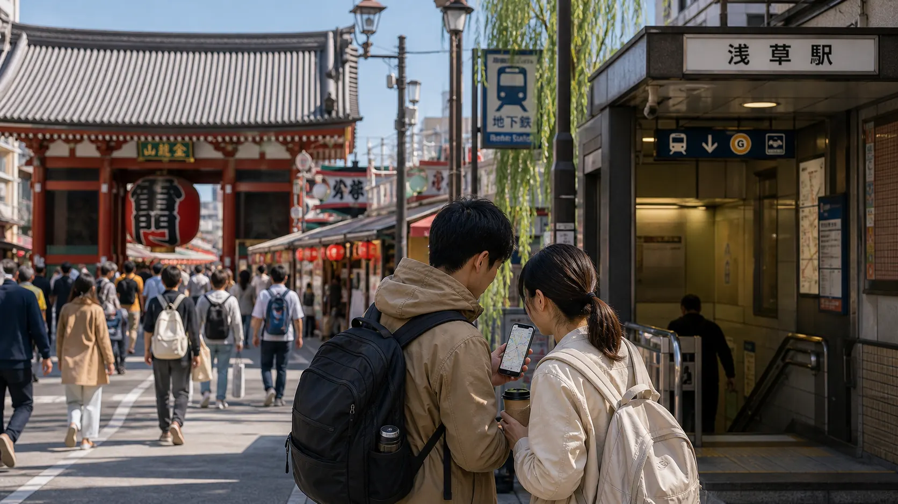
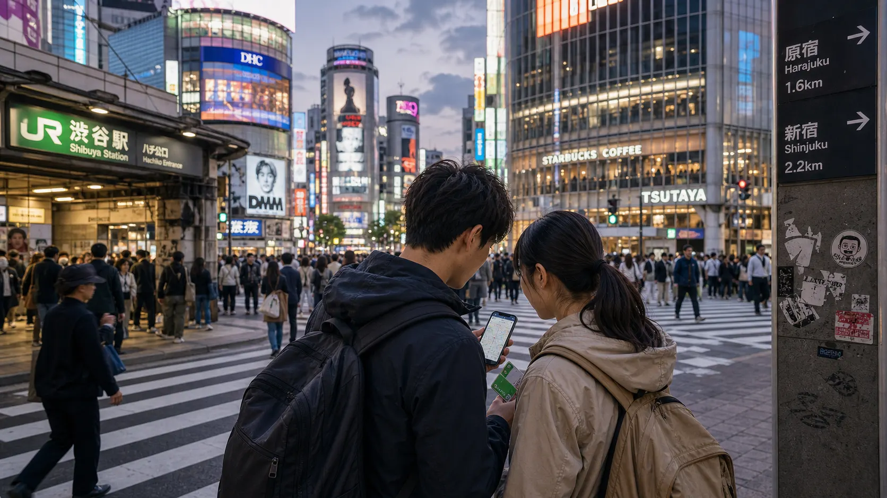
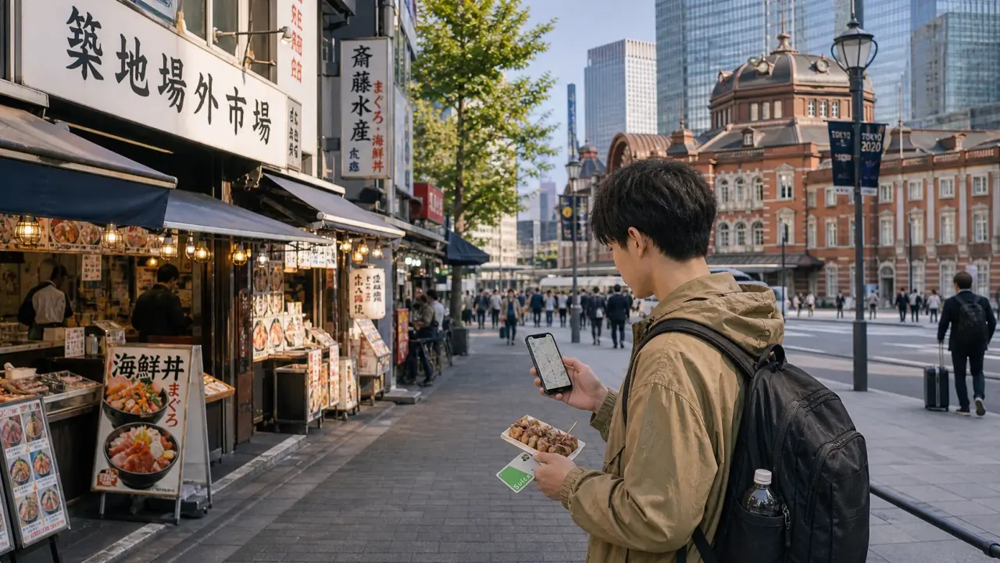
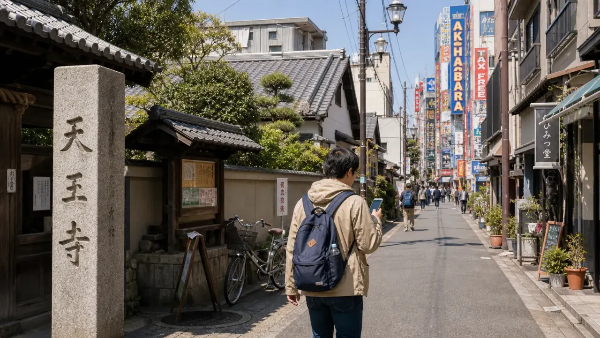
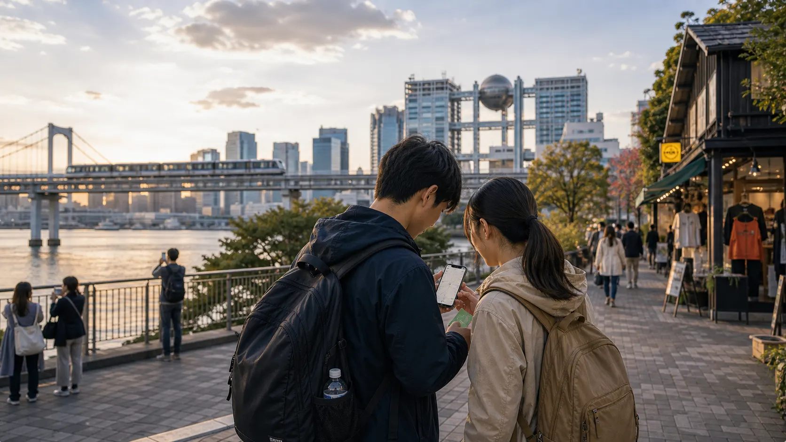

- Last reviewed
- June 2, 2026
- Best for
- First-time Tokyo visitors deciding where to stay and what to prioritize
- Trip length
- 3 days for highlights, 5 days for a balanced first visit
- Budget pressure
- Hotel area, paid attractions, airport access, and too much cross-city travel
- Use this to decide
- Which Tokyo zones deserve your time before booking hotels and tickets
Tokyo is not one city experience. It is a set of neighborhood clusters connected by excellent rail. Budget travelers do best when they stop treating Tokyo like a checklist and start grouping days by area.
Who Tokyo is best for
Tokyo is the easiest first Japan city because it has airport access, food at every price level, many free neighborhoods, and enough rail coverage to make mistakes recoverable. It is also where travelers overspend by choosing the wrong hotel base or crossing the city too often.
Main Tokyo sightseeing zones
Use these zones as planning blocks. Pick two or three for a short trip, or all five for a slower 5-day Tokyo stay.

Traditional Tokyo Asakusa and UenoBest for temples, markets, parks, museums, arrival day, and budget hotel bases.

Modern Tokyo Shibuya, Harajuku, ShinjukuBest for city lights, shopping streets, youth culture, nightlife, and viewpoints.

Food and station core Tsukiji, Ginza, Tokyo StationBest for food walks, architecture, department-store basements, and easy rail links.

Old and electric Yanaka, Nezu, AkihabaraBest for slower streets, small temples, local cafes, electronics, games, and anime shops.

Final day choice Odaiba or a relaxed neighborhoodBest for waterfront views, malls, a lighter final day, or swapping in Shimokitazawa cafes.
How many days in Tokyo?
| Trip length | What to do | What to skip |
|---|---|---|
| 2 days | Asakusa/Ueno plus Shibuya/Shinjuku | Long day trips and too many paid attractions. |
| 3 days | Add Tsukiji/Ginza/Tokyo Station | Trying to fit every neighborhood. |
| 5 days | Use the full zone plan and one slower day | Changing hotels inside Tokyo. |
| 7 days | Add a day trip or deeper neighborhoods | Buying passes without route math. |
Where to stay in Tokyo
For most budget travelers, Ueno, Asakusa, Ikebukuro, and parts of Shinjuku are the first areas to compare. The right answer depends on airport, trip route, and how late you plan to stay out.
Use the Tokyo hotel area guide before booking. It is better to pay slightly more for a useful station area than to save a few dollars and lose time every day.
Airport access
Haneda is closer to central Tokyo. Narita often needs more route planning. The right transfer depends on hotel side, luggage, and arrival time. Before choosing a hotel, compare the airport route in the Japan airport transfer guide.
How to get around
An IC card is the simplest choice for most Tokyo city travel. Day passes can save money only when your actual route fits the included operators. The bigger saving is grouping neighborhoods so you do not cross the city three times a day.
Cheap food that still feels like Tokyo
- Breakfast: convenience store rice balls, bakery items, or hotel breakfast if included.
- Lunch: ramen, soba, curry, gyudon, udon, or set meals near stations.
- Dinner: one casual izakaya night, conveyor sushi, department-store food halls, or local shopping streets.
- Snacks: vending machines, taiyaki, convenience-store desserts, and market tastings.
Sample first-time route
For a practical first route, use the Tokyo 5-day budget itinerary. If you only have three days, compress it to Asakusa/Ueno, Shibuya/Shinjuku, and Tsukiji/Ginza/Tokyo Station.
Common Tokyo budget mistakes
A cheaper nightly rate can lose value if it adds daily transfers and long station walks.
Plan Tokyo by clusters. One good area day is better than six scattered photo stops.
Choose one or two paid highlights and balance them with free streets, parks, markets, and station areas.
Station neighborhoods and local chains often give better value than queues around viral spots.
Sources and current checks
Before booking, verify current attraction rules, opening days, and transport details. Start with Go Tokyo, the official Tokyo travel guide, JNTO's IC card guide, and the official airport or rail operator pages for your route.
Choose the hotel base first, then build a route that avoids unnecessary cross-city travel.
Compare Tokyo Hotel AreasTokyo feels cheaper when every day has a clear side of the city. The hidden cost is not one train fare; it is wasted time and tired decisions.